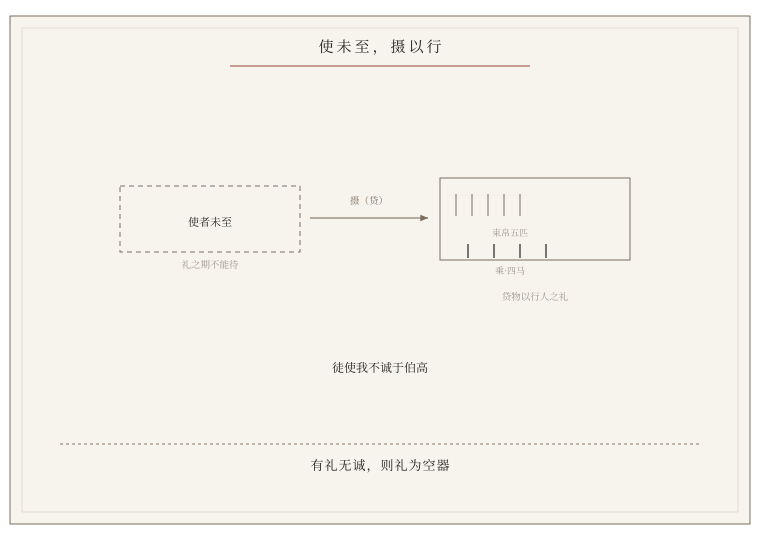

檀弓上 · 三·三十七 · 第 240 课
伯高之丧，孔氏之使者未至，冉子摄束帛乘马而将之。孔子曰：「异哉！徒使我不诚于伯高。」注「摄犹贷也」「礼所以副忠信也，忠信而无礼，何传乎」。
说什么事：有人替你把礼送到了，你却因此失了诚。
落在哪一层：礼，兼及礼意。论「礼以副忠信」。
为何编在此位：上节问礼之不及，此节见礼之不可代。礼能代行，诚不能代行。
【经】伯高之喪，孔氏之使者未至，冉子攝束帛乘馬而將之。孔子曰：「異哉！徒使我不誠於伯高。」
【注】伯高死时在卫，未闻何国人。谓赙赗者。冉子，孔子弟子冉有。摄犹贷也。徒犹空也。礼所以副忠信也，忠信而无礼，何传乎？
【疏】此一节论礼所以副忠信之事。摄犹贷也，谓冉子见孔子使人未至，贷之以束帛乘马而行礼。孔子既闻冉有贷之行礼，故怪恨之，云：空使我不得诚信行礼于伯高。忠信由心，礼在外貌；若内无忠信，礼何所施？故云「忠信而无礼」，谓无忠信也。既无忠信，礼何传乎？言不可传行也。冉有代孔子行吊，非孔子本意，是非孔子忠信，虚有吊礼。若孔子重遣人更吊，即弥为不可，故云空使我不得诚信行礼于伯高。
伯高 注「死时在卫，未闻何国人」。
孔氏之使者 孔子所遣吊赙之人。
摄 注「犹贷也」。假借而权行之。
束帛 帛五匹为一束。
乘马 四马为乘。注「乘，绳证反，四马曰乘」。
将之 奉之以行。
徒 注「犹空也」。
副 注「副音仆」。副者，副其内而形于外。
伯高之丧，孔子所派的使者还未到，冉子借了束帛与乘马，先奉礼而去。孔子说：「怪哉！这空空地使我对伯高不成其为诚。」
此节一「异哉」二字定案。冉子是善意：见使者未至，丧事有期，遂贷帛马先行。而孔子说「徒使我不诚于伯高」——徒者空也。礼到了，诚不在其中，于是那一份礼成了空器。注一语道破：礼所以副忠信也。副者，副其内也；内既不在，则所副者何物。此节最痛处不在冉子之越，而在「重吊弥不可」一句：已经有人以我之名行礼，我若再补，便是两番礼而一诚，愈见其虚，故宁可受此空礼。
第一层 摄之训 摄犹贷也。贷者，取诸人而权用之。冉子所贷者帛马，所行者孔子之礼。物可贷，名亦可贷，唯诚不可贷。
第二层 礼副忠信 注「礼所以副忠信也，忠信而无礼，何传乎」。忠信在内，无形状可见；礼在外，有节文可传。故礼为忠信之副——副者，副本也，非正本。正本在内，副本在外；内亡则外无所副，如印去而纸存。
第三层 徒使我不诚 疏解「虚有吊礼」四字最切。虚者，非无礼也，礼在而人不在。此与「不诚于礼」不同：孔子不诚于伯高，非不诚于礼。礼无可责，所责者礼与人之不相值。
第四层 重吊弥不可 疏「若孔子重遣人更吊，即弥为不可」。此一层最见礼之不得已：错了的礼不能以再行礼补之，再行则前礼为伪、后礼为饰。故孔子只受此空礼而不补，任其不诚，此之谓知其不可而安之。
与今日何干 代人送礼、代转人情、代写慰问——礼数到了，情意不到。受者不觉其空，送者自知其空。此节给的戒是：凡以他人之名行礼，须先问那一份诚在不在我。
| 左 | 右 |
|---|---|
| 使者未至 | 礼之期不能待 |
| 冉子摄束帛乘马 | 贷物以行人之礼 |
| 摄犹贷也 | 物可贷，诚不可贷 |
| 礼所以副忠信 | 副者副本，非正本 |
| 徒使我不诚于伯高 | 礼在而人不在 |
| 重吊则弥为不可 | 伪礼不可以再礼补 |
画一处门外的空地，视点平。左侧一道门，门前立着一位士人（衣素、面朝门外、两手垂着不动），脚边放着一束未解开的白帛。右侧稍远处另有一人（衣略深、正弯腰把帛与马缰一并捧起），身后系着一匹马，马首低垂。两人之间地上有一道车辙。不写文字、不画人面细节。赭色只用在右侧那人捧帛的手背上与马额的一小块。
